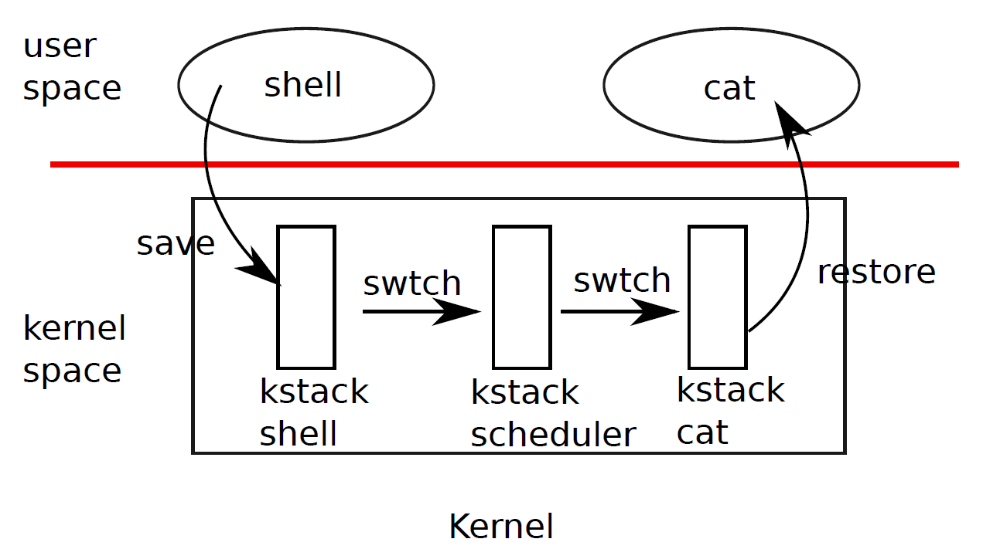

Chapter 5
Any operating system is likely to run with more processes than the computer has processors, and so a plan is needed to time-share the processors among the processes. Ideally the sharing would be transparent to user processes. A common approach is to provide each process with the illusion that it has its own virtual processor, and have the operating system multiplex multiple virtual processors on a single physical processor. This chapter explains how xv6 multiplexes a processor among several processes.
Xv6 multiplexes by switching each processor from one process to another in two situations. First, xv6's sleep and wakeup mechanism switches when a process waits for device or pipe I/O to complete, or waits for a child to exit, or waits in the sleep system call. Second, xv6 periodically forces a switch when a process is executing user instructions. This multiplexing creates the illusion that each process has its own CPU, just as xv6 uses the memory allocator and hardware page tables to create the illusion that each process has its own memory.
Implementing multiplexing poses a few challenges. First, how to switch from one process to another? Xv6 uses the standard mechanism of context switching; although the idea is simple, the implementation is some of the most opaque code in the system. Second, how to do context switching transparently? Xv6 uses the standard technique of using the timer interrupt handler to drive context switches. Third, many CPUs may be switching among processes concurrently, and a locking plan is necessary to avoid races. Fourth, when a process has exited its memory and other resources must be freed, but it cannot do all of this itself because (for example) it can't free its own kernel stack while still using it. Xv6 tries to solve these problems as simply as possible, but nevertheless the resulting code is tricky.
xv6 must provide ways for processes to coordinate among themselves. For exam-
ple, a parent process may need to wait for one of its children to exit, or a process reading a pipe may need to wait for some other process to write the pipe. Rather than make the waiting process waste CPU by repeatedly checking whether the desired event has happened, xv6 allows a process to give up the CPU and sleep waiting for an event, and allows another process to wake the first process up. Care is needed to avoid races that result in the loss of event notifications. As an example of these problems and their solution, this chapter examines the implementation of pipes.

Figure 5-1. Switching from one user process to another. In this example, xv6 runs with one CPU (and thus one scheduler thread).
As shown in Figure 5-1, to switch between processes, xv6 performs two kinds of context switches at a low level: from a process's kernel thread to the current CPU's scheduler thread, and from the scheduler thread to a process's kernel thread. xv6 never directly switches from one user-space process to another; this happens by way of a user-kernel transition (system call or interrupt), a context switch to the scheduler, a context switch to a new process's kernel thread, and a trap return. In this section we'll example the mechanics of switching between a kernel thread and a scheduler thread.
Every xv6 process has its own kernel stack and register set, as we saw in Chapter 2. Each CPU has a separate scheduler thread for use when it is executing the scheduler rather than any process's kernel thread. Switching from one thread to another involves saving the old thread's CPU registers, and restoring previously-saved registers of the new thread; the fact that %esp and %eip are saved and restored means that the CPU will switch stacks and switch what code it is executing.
swtch doesn't directly know about threads; it just saves and restores register sets, called contexts. When it is time for the process to give up the CPU, the process's kernel thread will call swtch to save its own context and return to the scheduler context. Each context is represented by a struct context*, a pointer to a structure stored on the kernel stack involved. Swtch takes two arguments: struct context **old and struct context *new. It pushes the current CPU register onto the stack and saves the stack pointer in *old. Then swtch copies new to %esp, pops previously saved registers, and returns.
Instead of following the scheduler into swtch, let's instead follow our user process back in. We saw in Chapter 3 that one possibility at the end of each interrupt is that trap calls yield. Yield in turn calls sched, which calls swtch to save the current context in proc->context and switch to the scheduler context previously saved in cpu->scheduler (2766).
Swtch (2952) starts by loading its arguments off the stack into the registers %eax and %edx (2959-2960); swtch must do this before it changes the stack pointer and can no longer access the arguments via %esp. Then swtch pushes the register state, creating a context structure on the current stack. Only the callee-save registers need to be saved; the convention on the x86 is that these are %ebp, %ebx, %esi, %ebp, and %esp. Swtch pushes the first four explicitly (2963-2966); it saves the last implicitly as the struct context* written to *old (2969). There is one more important register: the program counter %eip was saved by the call instruction that invoked swtch and is on the stack just above %ebp. Having saved the old context, swtch is ready to restore the new one. It moves the pointer to the new context into the stack pointer (2970). The new stack has the same form as the old one that swtch just left—the new stack was the old one in a previous call to swtch—so swtch can invert the sequence to restore the new context. It pops the values for %edi, %esi, %ebx, and %ebp and then returns (2973-2977). Because swtch has changed the stack pointer, the values restored and the instruction address returned to are the ones from the new context.
In our example, sched called swtch to switch to cpu->scheduler, the per-CPU scheduler context. That context had been saved by scheduler's call to swtch (2728). When the swtch we have been tracing returns, it returns not to sched but to scheduler, and its stack pointer points at the current CPU's scheduler stack, not initproc's kernel stack.
The last section looked at the low-level details of swtch; now let's take swtch as a given and examine the conventions involved in switching from process to scheduler and back to process. A process that wants to give up the CPU must acquire the process table lock ptable.lock, release any other locks it is holding, update its own state (proc->state), and then call sched. Yield (2772) follows this convention, as do sleep and exit, which we will examine later. Sched double-checks those conditions (27572762) and then an implication of those conditions: since a lock is held, the CPU should be running with interrupts disabled. Finally, sched calls swtch to save the current context in proc->context and switch to the scheduler context in cpu->scheduler. Swtch returns on the scheduler's stack as though scheduler's swtch had returned (2728). The scheduler continues the for loop, finds a process to run, switches to it, and the cycle repeats.
We just saw that xv6 holds ptable.lock across calls to swtch: the caller of swtch must already hold the lock, and control of the lock passes to the switched-to code. This convention is unusual with locks; the typical convention is the thread that acquires a lock is also responsible of releasing the lock, which makes it easier to reason about correctness. For context switching it is necessary to break the typical convention because ptable.lock protects invariants on the process's state and context fields that are not true while executing in swtch. One example of a problem that could arise if ptable.lock were not held during swtch: a different CPU might decide to run the process after yield had set its state to RUNNABLE, but before swtch caused it to stop using its own kernel stack. The result would be two CPUs running on the same stack, which cannot be right.
A kernel thread always gives up its processor in sched and always switches to the same location in the scheduler, which (almost) always switches to a process in sched. Thus, if one were to print out the line numbers where xv6 switches threads, one would observe the following simple pattern: (2728), (2766), (2728), (2766), and so on. The procedures in which this stylized switching between two threads happens are sometimes referred to as coroutines; in this example, sched and scheduler are co-routines of each other.
There is one case when the scheduler's swtch to a new process does not end up in sched. We saw this case in Chapter 2: when a new process is first scheduled, it begins at forkret (2783). Forkret exists only to honor this convention by releasing the ptable.lock; otherwise, the new process could start at trapret.
Scheduler (2708) runs a simple loop: find a process to run, run it until it stops, repeat. scheduler holds ptable.lock for most of its actions, but releases the lock (and explicitly enables interrupts) once in each iteration of its outer loop. This is important for the special case in which this CPU is idle (can find no RUNNABLE process). If an idling scheduler looped with the lock continuously held, no other CPU that was running a process could ever perform a context switch or any process-related system call, and in particular could never mark a process as RUNNABLE so as to break the idling CPU out of its scheduling loop. The reason to enable interrupts periodically on an idling CPU is that there might be no RUNNABLE process because processes (e.g., the shell) are waiting for I/O; if the scheduler left interrupts disabled all the time, the I/O would never arrive.
The scheduler loops over the process table looking for a runnable process, one that has p->state == RUNNABLE. Once it finds a process, it sets the per-CPU current process variable proc, switches to the process's page table with switchuvm, marks the process as RUNNING, and then calls swtch to start running it (2722-2728).
One way to think about the structure of the scheduling code is that it arranges to enforce a set of invariants about each process, and holds ptable.lock whenever those invariants are not true. One invariant is that if a process is RUNNING, things must be set up so that a timer interrupt's yield can correctly switch away from the process; this means that the CPU registers must hold the process's register values (i.e. they aren't actually in a context), %cr3 must refer to the process's pagetable, %esp must refer to the process's kernel stack so that swtch can push registers correctly, and proc must refer to the process's proc[] slot. Another invariant is that if a process is RUNNABLE, things must be set up so that an idle CPU's scheduler can run it; this means that p->context must hold the process's kernel thread variables, that no CPU is executing on the process's kernel stack, that no CPU's %cr3 refers to the process's page table, and that no CPU's proc refers to the process.
Maintaining the above invariants is the reason why xv6 acquires ptable.lock in one thread (often in yield) and releases the lock in a different thread (the scheduler thread or another next kernel thread). Once the code has started to modify a running process's state to make it RUNNABLE, it must hold the lock until it has finished restoring the invariants: the earliest correct release point is after scheduler stops using the process's page table and clears proc. Similarly, once scheduler starts to convert a runnable process to RUNNING, the lock cannot be released until the kernel thread is completely running (after the swtch, e.g. in yield).
ptable.lock protects other things as well: allocation of process IDs and free process table slots, the interplay between exit and wait, the machinery to avoid lost wakeups (see next section), and probably other things too. It might be worth thinking about whether the different functions of ptable.lock could be split up, certainly for clarity and perhaps for performance.
Scheduling and locks help conceal the existence of one process from another, but so far we have no abstractions that help processes intentionally interact. Sleep and wakeup fill that void, allowing one process to sleep waiting for an event and another process to wake it up once the event has happened. Sleep and wakeup are often called sequence coordination or conditional synchronization mechanisms, and there are many other similar mechanisms in the operating systems literature.
To illustrate what we mean, let's consider a simple producer/consumer queue. This queue is similar to the one that feeds commands from processes to the IDE driver (see Chapter 3), but abstracts away all IDE-specific code. The queue allows one process to send a nonzero pointer to another process. If there were only one sender and one receiver, and they executed on different CPUs, and the compiler didn't optimize too agressively, this implementation would be correct:
100 struct q {
101 void *ptr;
102 };
103
104 void*
105 send(struct q *q, void *p)
106 {
107 while(q->ptr != 0)
108 ;
109 q->ptr = p;
110 }
111
112 void*
113 recv(struct q *q)
114 {
115 void *p;
116
117 while((p = q->ptr) == 0)
118 ;
119 q->ptr = 0;
120 return p;
121 }
Send loops until the queue is empty (ptr == 0) and then puts the pointer p in the queue. Recv loops until the queue is non-empty and takes the pointer out. When run in different processes, send and recv both modify q->ptr, but send only writes the pointer when it is zero and recv only writes the pointer when it is nonzero, so no updates are lost.
The implementation above is expensive. If the sender sends rarely, the receiver will spend most of its time spinning in the while loop hoping for a pointer. The receiver's CPU could find more productive work if there were a way for the receiver to
215 216
wait for wakeup forever
test sleep recv
Time
send
206 store p |
207 wakeup |
204 test |
205 spin forever |
Figure 5-2. Example lost wakeup problem
yield the CPU and resume only when send delivered a pointer.
Let's imagine a pair of calls, sleep and wakeup, that work as follows. Sleep(chan) sleeps on the arbitrary value chan, called the wait channel. Sleep puts the calling process to sleep, releasing the CPU for other work. Wakeup(chan) wakes all processes sleeping on chan (if any), causing their sleep calls to return. If no processes are waiting on chan, wakeup does nothing. We can change the queue implementation to use sleep and wakeup:
209
214
Recv now gives up the CPU instead of spinning, which is nice. However, it turns out not to be straightforward to design sleep and wakeup with this interface without suffering from what is known as the ''lost wake-up'' problem (see Figure 5-2). Suppose that recv finds that q->ptr == 0 on line 215. While recv is between lines 215 and 216, send runs on another CPU: it changes q->ptr to be nonzero and calls wakeup, which finds no processes sleeping and thus does nothing. Now recv continues executing at line 216: it calls sleep and goes to sleep. This causes a problem: recv is asleep waiting for a pointer that has already arrived. The next send will sleep waiting for recv to consume the pointer in the queue, at which point the system will be deadlocked.
The root of this problem is that the invariant that recv only sleeps when q->ptr == 0 is violated by send running at just the wrong moment. One incorrect way of protecting the invariant would be to modify the code for recv as follows:
304
315
320
One might hope that this version of recv would avoid the lost wakeup because the lock prevents send from executing between lines 322 and 323. It does that, but it also deadlocks: recv holds the lock while it sleeps, so the sender will block forever waiting for the lock.
We'll fix the preceding scheme by passing the lock to sleep so it can release the lock after the calling process is marked as asleep and waiting on the sleep channel. The lock will force a concurrent send to wait until the receiver has finished putting itself to sleep, so that the wakeup will find the sleeping receiver and wake it up. Once the receiver is awake again sleep reacquires the lock before returning. Our new correct scheme is useable as follows:
404
415
420
The fact that recv holds q->lock prevents send from trying to wake it up between recv's check of q->ptr and its call to sleep. Of course, the receiving process must release q->lock while it is sleeping so the sender can wake it up. So we want sleep to atomically release q->lock and put the receiving process to sleep.
A complete sender/receiver implementation would also sleep in send when waiting for a receiver to consume the value from a previous send.
Let's look at the implementation of sleep and wakeup in xv6. The basic idea is to have sleep mark the current process as SLEEPING and then call sched to release the processor; wakeup looks for a process sleeping on the given wait channel and marks it as RUNNABLE.
Sleep (2803) begins with a few sanity checks: there must be a current process
(2805) and sleep must have been passed a lock (2808-2809). Then sleep acquires ptable.lock (2818). Now the process going to sleep holds both ptable.lock and lk. Holding lk was necessary in the caller (in the example, recv): it ensured that no other process (in the example, one running send) could start a call wakeup(chan). Now that sleep holds ptable.lock, it is safe to release lk: some other process may start a call to wakeup(chan), but wakeup will not run until it can acquire ptable.lock, so it must wait until sleep has finished putting the process to sleep, keeping the wakeup from missing the sleep.
There is a minor complication: if lk is equal to &ptable.lock, then sleep would deadlock trying to acquire it as &ptable.lock and then release it as lk. In this case, sleep considers the acquire and release to cancel each other out and skips them entirely (2817). For example, wait (2653) calls sleep with &ptable.lock.
Now that sleep holds ptable.lock and no others, it can put the process to sleep by recording the sleep channel, changing the process state, and calling sched (2823-2825).
At some point later, a process will call wakeup(chan). Wakeup (2853) acquires ptable.lock and calls wakeup1, which does the real work. It is important that wakeup hold the ptable.lock both because it is manipulating process states and because, as we just saw, ptable.lock makes sure that sleep and wakeup do not miss each other. Wakeup1 is a separate function because sometimes the scheduler needs to execute a wakeup when it already holds the ptable.lock; we will see an example of this later. Wakeup1 (2853) loops over the process table. When it finds a process in state SLEEPING with a matching chan, it changes that process's state to RUNNABLE. The next time the scheduler runs, it will see that the process is ready to be run.
Wakeup must always be called while holding a lock that guards whatever the wakeup condition is; in the example above that lock is q->lock. The complete argument for why the sleeping process won't miss a wakeup is that at all times from before it checks the condition until after it is asleep, it holds either the lock on the condition or the ptable.lock or both. Since wakeup executes while holding both of those locks, the wakeup must execute either before the potential sleeper checks the condition, or after the potential sleeper has completed putting itself to sleep.
It is sometimes the case that multiple processes are sleeping on the same channel; for example, more than one process trying to read from a pipe. A single call to wakeup will wake them all up. One of them will run first and acquire the lock that sleep was called with, and (in the case of pipes) read whatever data is waiting in the pipe. The other processes will find that, despite being woken up, there is no data to be read. From their point of view the wakeup was ''spurious,'' and they must sleep again. For this reason sleep is always called inside a loop that checks the condition.
Callers of sleep and wakeup can use any mutually convenient number as the channel; in practice xv6 often uses the address of a kernel data structure involved in the waiting, such as a disk buffer. No harm is done if two uses of sleep/wakeup accidentally choose the same channel: they will see spurious wakeups, but looping as described above will tolerate this problem. Much of the charm of sleep/wakeup is that it is both lightweight (no need to create special data structures to act as sleep channels) and provides a layer of indirection (callers need not know what specific process they are interacting with).
The simple queue we used earlier in this chapter was a toy, but xv6 contains two real queues that uses sleep and wakeup to synchronize readers and writers. One is in the IDE driver: processes add a disk requests to a queue and then calls sleep. The interrupt handler uses wakeup to alert the process that its request has completed.
An more complex example is the implementation of pipes. We saw the interface for pipes in Chapter 0: bytes written to one end of a pipe are copied in an in-kernel buffer and then can be read out of the other end of the pipe. Future chapters will examine the file system support surrounding pipes, but let's look now at the implementations of pipewrite and piperead.
Each pipe is represented by a struct pipe, which contains a lock and a data buffer. The fields nread and nwrite count the number of bytes read from and written to the buffer. The buffer wraps around: the next byte written after buf[PIPESIZE-1] is buf[0], but the counts do not wrap. This convention lets the implementation distinguish a full buffer (nwrite == nread+PIPESIZE) from an empty buffer nwrite == nread), but it means that indexing into the buffer must use buf[nread % PIPESIZE] instead of just buf[nread] (and similarly for nwrite). Let's suppose that calls to piperead and pipewrite happen simultaneously on two different CPUs.
Pipewrite (6530) begins by acquiring the pipe's lock, which protects the counts, the data, and their associated invariants. Piperead (6551) then tries to acquire the lock too, but cannot. It spins in acquire (1574) waiting for the lock. While piperead waits, pipewrite loops over the bytes being written—addr[0], addr[1], ..., addr[n-1]— adding each to the pipe in turn (6544). During this loop, it could happen that the buffer fills (6536). In this case, pipewrite calls wakeup to alert any sleeping readers to the fact that there is data waiting in the buffer and then sleeps on &p->nwrite to wait for a reader to take some bytes out of the buffer. Sleep releases p->lock as part of putting pipewrite's process to sleep.
Now that p->lock is available, piperead manages to acquire it and start running in earnest: it finds that p->nread != p->nwrite (6556) (pipewrite went to sleep because p->nwrite == p->nread+PIPESIZE (6536)) so it falls through to the for loop, copies data out of the pipe (6563-6567), and increments nread by the number of bytes copied. That many bytes are now available for writing, so piperead calls wakeup (6568) to wake any sleeping writers before it returns to its caller. Wakeup finds a process sleeping on &p->nwrite, the process that was running pipewrite but stopped when the buffer filled. It marks that process as RUNNABLE.
The pipe code uses separate sleep channels for reader and writer ( p->nread and p->nwrite); this might make the system more efficient in the unlikely event that there are lots of readers and writers waiting for the same pipe. The pipe code sleeps inside a loop checking the sleep condition; if there are multiple readers or writers, all but the first process to wake up will see the condition is still false and sleep again.
Sleep and wakeup can be used for many kinds of waiting. An interesting example, seen Chapter 0, is the wait system call that a parent process uses to wait for a child to exit. In xv6, when a child exits, it does not die immediately. Instead, it switches to the ZOMBIE process state until the parent calls wait to learn of the exit. The parent is then responsible for freeing the memory associated with the process and preparing the struct proc for reuse. If the parent exits before the child, the init process adopts the child and waits for it, so that every child has a parent to clean up after it. Keep in mind the possibility of races between parent and child wait and exit, as well as exit and exit.
Wait begins by acquiring ptable.lock. Then it scans the process table looking for children. If wait finds that the current process has children but that none have exited, it calls sleep to wait for one of them to exit (2689) and scans again. Here, the lock being released in sleep is ptable.lock, the special case we saw above.
Exit acquires ptable.lock and then wakes up any process sleeping on a wait channel equal to the current process's parent proc (2628); if there is such a process, it will be the parent in wait. This may look premature, since exit has not marked the current process as a ZOMBIE yet, but it is safe: although wakeup may mark the parent as RUNNABLE, the loop in wait cannot run until exit releases ptable.lock by calling sched to enter the scheduler, so wait can't look at the exiting process until after exit has set its state to ZOMBIE (2640). Before exit reschedules, it reparents all of the exiting process's children, passing them to the initproc (2630-2637). Finally, exit calls sched to relinquish the CPU.
If the parent process was sleeping in wait, the scheduler will eventually run it. The call to sleep returns holding ptable.lock; wait rescans the process table and finds the exited child with state == ZOMBIE. (2634). It records the child's pid and then cleans up the struct proc, freeing the memory associated with the process (2668-2676).
The child process could have done most of the cleanup during exit, but it is important that the parent process be the one to free p->kstack and p->pgdir: when the child runs exit, its stack sits in the memory allocated as p->kstack and it uses its own pagetable. They can only be freed after the child process has finished running for the last time by calling swtch (via sched). This is one reason that the scheduler procedure runs on its own stack rather than on the stack of the thread that called sched.
While exit allows a process to terminate itself, kill (2875) lets one process request that another be terminated. It would be too complex for kill to directly destroy the victim process, since the victim might be executing on another CPU or sleeping while midway through updating kernel data structures. To address these challenges, kill does very little: it just sets the victim's p->killed and, if it is sleeping, wakes it up. Eventually the victim will enter or leave the kernel, at which point code in trap will call exit if p->killed is set. If the victim is running in user space, it will soon enter the kernel by making a system call or because the timer (or some other device) interrupts.
If the victim process is in sleep, the call to wakeup will cause the victim process to return from sleep. This is potentially dangerous because the condition being waiting for may not be true. However, xv6 calls to sleep are always wrapped in a while loop that re-tests the condition after sleep returns. Some calls to sleep also test p>killed in the loop, and abandon the current activity if it is set. This is only done when such abandonment would be correct. For example, the pipe read and write code (6537) returns if the killed flag is set; eventually the code will return back to trap, which will again check the flag and exit.
Some xv6 sleep loops do not check p->killed because the code is in the middle of a multi-step system call that should be atomic. The IDE driver (4279) is an example: it does not check p->killed because a disk operation may be one of a set of writes that are all needed in order for the file system to be left in a correct state. To avoid the complication of cleaning up after a partial operation, xv6 delays the killing of a process that is in the IDE driver until some point later when it is easy to kill the process (e.g., when the complete file system operation has completed and the process is about to return to user space).
The xv6 scheduler implements a simple scheduling policy, which runs each process in turn. This policy is called round robin. Real operating systems implement more sophisticated policies that, for example, allow processes to have priorities. The idea is that a runnable high-priority process will be preferred by the scheduler over a runnable low-priority thread. These policies can become complex quickly because there are often competing goals: for example, the operating might also want to guarantee fairness and high-throughput. In addition, complex policies may lead to unintended interactions such as priority inversion and convoys. Priority inversion can happen when a low-priority and high-priority process share a lock, which when acquired by the low-priority process can cause the high-priority process to not run. A long convoy can form when many high-priority processes are waiting for a low-priority process that acquires a shared lock; once a convoy has formed they can persist for long period of time. To avoid these kinds of problems additional mechanisms are necessary in sophisticated schedulers.
Sleep and wakeup are a simple and effective synchronization method, but there are many others. The first challenge in all of them is to avoid the ''missed wakeups'' problem we saw at the beginning of the chapter. The original Unix kernel's sleep simply disabled interrupts, which sufficed because Unix ran on a single-CPU system. Because xv6 runs on multiprocessors, it adds an explicit lock to sleep. FreeBSD's msleep takes the same approach. Plan 9's sleep uses a callback function that runs with the scheduling lock held just before going to sleep; the function serves as a last minute check of the sleep condition, to avoid missed wakeups. The Linux kernel's sleep uses an explicit process queue instead of a wait channel; the queue has its own internal lock.
Scanning the entire process list in wakeup for processes with a matching chan is inefficient. A better solution is to replace the chan in both sleep and wakeup with a data structure that holds a list of processes sleeping on that structure. Plan 9's sleep and wakeup call that structure a rendezvous point or Rendez. Many thread libraries refer to the same structure as a condition variable; in that context, the operations sleep and wakeup are called wait and signal. All of these mechanisms share the same flavor: the sleep condition is protected by some kind of lock dropped atomically during sleep.
The implementation of wakeup wakes up all processes that are waiting on a particular channel, and it might be the case that many processes are waiting for that particular channel. The operating system will schedule all these processes and they will race to check the sleep condition. Processes that behave in this way are sometimes called a thundering herd, and it is best avoided. Most condition variables have two primitives for wakeup: signal, which wakes up one process, and broadcast, which wakes up all processes waiting.
Semaphores are another common coordination mechanism. A semaphore is an integer value with two operations, increment and decrement (or up and down). It is aways possible to increment a semaphore, but the semaphore value is not allowed to drop below zero: a decrement of a zero semaphore sleeps until another process increments the semaphore, and then those two operations cancel out. The integer value typically corresponds to a real count, such as the number of bytes available in a pipe buffer or the number of zombie children that a process has. Using an explicit count as part of the abstraction avoids the ''missed wakeup'' problem: there is an explicit count of the number of wakeups that have occurred. The count also avoids the spurious wakeup and thundering herd problems.
Terminating processes and cleaning them up introduces much complexity in xv6. In most operating systems it is even more complex, because, for example, the victim process may be deep inside the kernel sleeping, and unwinding its stack requires much careful programming. Many operating system unwind the stack using explicit mechanisms for exception handling, such as longjmp. Furthermore, there are other events that can cause a sleeping process to be woken up, even though the events it is waiting for has not happened yet. For example, when a process is sleeping, another process may send a signal to it. In this case, the process will return from the interrupted system call with the value -1 and with the error code set to EINTR. The application can check for these values and decide what to do. Xv6 doesn't support signals and this complexity doesn't arise.
Xv6's support for kill is not entirely satisfactory: there are sleep loops which probably should check for p->killed. A related problem is that, even for sleep loops that check p->killed, there is a race between sleep and kill; the latter may set p>killed and try to wake up the victim just after the victim's loop checks p->killed but before it calls sleep. If this problem occurs, the victim won't notice the p>killed until the condition it is waiting for occurs. This may be quite a bit later (e.g., when the IDE driver returns a disk block that the victim is waiting for) or never (e.g., if the victim is waiting from input from the console, but the user doesn't type any input).
if(lk != &ptable.lock){ acquire(&ptable.lock); release(lk);
} with
release(lk); acquire(&ptable.lock);
Doing this would break sleep. How?